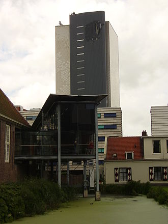

Mammoth skeleton on display in the old museum
Naturalis Biodiversity Center (Dutch: Nederlands Centrum voor Biodiversiteit Naturalis) is a national museum of natural history and a research center on biodiversity in Leiden, Netherlands. The museum is temporarily closed due to renovations, but the research facilities are still available. The new institute will open mid 2019.
Although its current name and organization is relatively recent, its history can be traced back to the early 1800s. Its collections contain approximately 37 million specimens, one of the largest natural history collections in the world. In late 2016 the center closed its main building for renovations, with plans to re-open in late 2018. Temporary exhibitions are open in the pesthuis entrance building during the renovations.
-The tower of Naturalis, in which almost the entire collection is housed